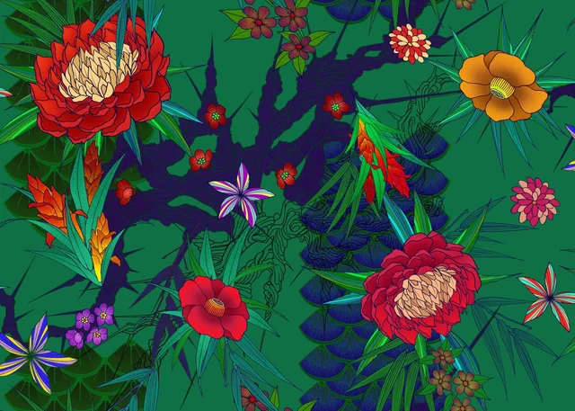

Graduation exhibition 2026
Noh
Yeonwoo.
이미지와 재료, 전통과 동시대의 감각 사이를 탐구합니다. 시각 언어를 만들고, 손으로 구현하며, 새로운 장면으로 연결합니다.
작품 둘러보기


작가 소개
About the
designer.
I make things with meaning,
texture & a little curiosity.
시각디자인과 조형의 경계를 오가며 그래픽, 텍스타일, 공예, 브랜딩을 작업합니다. 한국적인 소재와 형태를 관찰하고, 지금의 시선으로 다시 조합하는 과정에 관심이 있습니다. 아이디어를 시각화하는 데서 멈추지 않고 실제 재료와 제작 방식으로 연결하는 디자이너를 지향합니다.
- 교육
- 강릉원주대학교
조형예술·디자인 분야
2021 — 2026 - 작업 분야
- Graphic Design
Textile & Craft
Branding / Art Direction - 도구
- Adobe Photoshop
Illustrator · InDesign
Digital & Handcraft - 관심사
- Korean Aesthetics
Material Experiments
Visual Storytelling